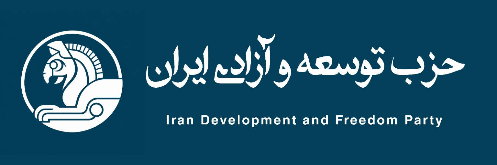
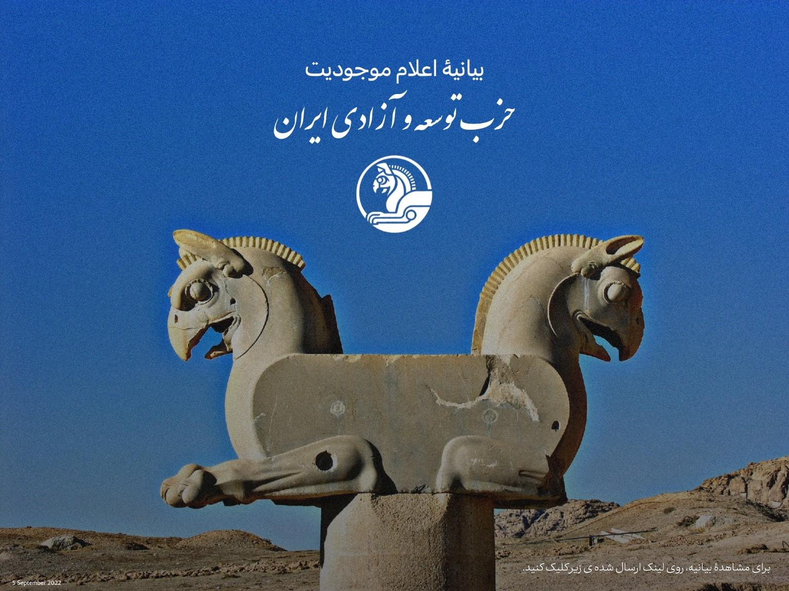

حزب توسعه و آزادی ایران
متن کامل بیانیه در صفحه اختصاصی مطلب قرار گرفته و میتوانید لینک مستقیم آن را کپی و منتشر کنید.
باز کردن مطلب ←

متن اعلام موجودیت حزب و اصولی که در آغاز فعالیت تشکیلاتی اعلام شده است.
متن کامل بیانیه در صفحه اختصاصی مطلب قرار گرفته و میتوانید لینک مستقیم آن را کپی و منتشر کنید.
باز کردن مطلب ←این وبسایت برای انتشار مطالب و بیانیههای رسمی حزب توسعه و آزادی ایران طراحی شده است. مطالب هر پست در یک نشانی مستقل قرار میگیرند تا بتوان لینک مستقیم آنها را کپی و منتشر کرد.